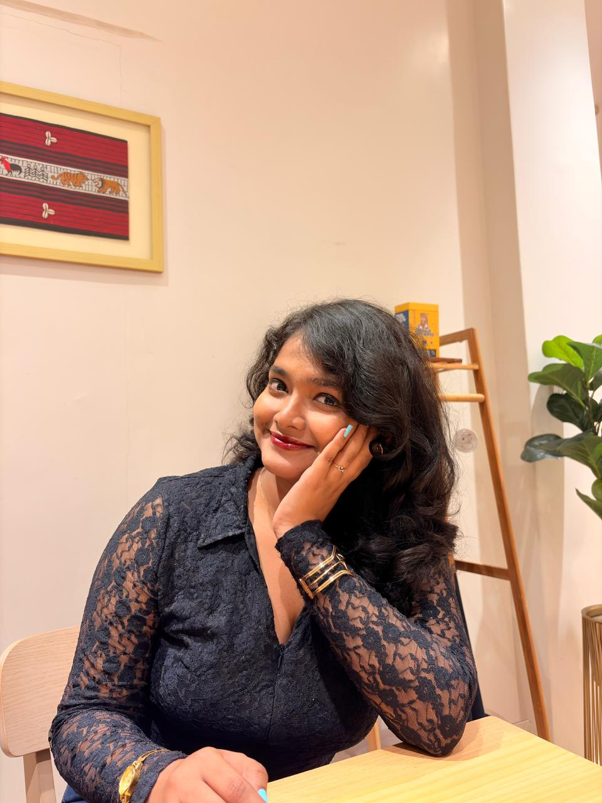

“I build the AI that automates the work — and the ML that informs it.”

Final-year B.Tech (CSE — AI & ML) at The Neotia University, splitting my time between production agentic automation and applied ML research.
By day, I'm an Automation Expert & Analyst in the VRT department at Ergode (VirVentures), building Playwright + OCR + Google-API pipelines that turn manual e-commerce workflows into zero-touch systems.
By night, I'm a Research Intern at the Indian Statistical Institute, Kolkata, working on early prediction of Glacial Lake Outburst Floods using satellite imagery and spectral unmixing.
And on weekends, I build medical-AI side projects — CNN-based tumor segmentation and multimodal diabetic classifiers — because I think the most interesting problems sit between disciplines.
Play with live 3D models representing my core domains of expertise. Drag, orbit, and execute simulated pipelines in real-time.
I'm open to full-time AI Automation Engineering, AI/ML, GenAI, and Medical AI roles starting June 2026 — and always up for research collaborations.